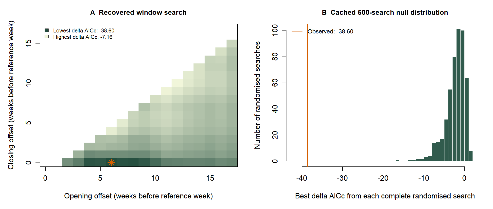

Sliding-window approach
Data preparation
Show R code
annual <- read.csv("data_derived/annual_raw_median_laying_date.csv")
weather <- read.csv("data_derived/smhi_hoburg_daily_temperature.csv")
cache <- readRDS("cache/climwin/recovered_search_data.rds")
stopifnot(nrow(annual) == 45L, nrow(cache$randomised) == 500L)Candidate-window calculation
The browser step below rebuilds the eligible-window search from the public daily temperature and annual laying-date inputs, then compares its selected window with the saved result. It also runs 500 fresh randomisations. This can take longer than the input check; nothing runs until you press Run code.
Recalculate the sliding-window search
Fits the eligible linear-window search from the daily data, then runs 500 new randomised searches. Base R; no individual bird records are needed.
Full fitting script
The complete climwin workflow is available for running locally. It requires the private individual laying-date file and the R package environment used for that search. The browser calculation above uses public annual summaries and base R; it reproduces the candidate-window calculation, not the unavailable raw-record preprocessing.
Show full climwin script
R/04_climwin_laying_date.R
#!/usr/bin/env Rscript
.libPaths(c("../../repo_gotland_flycatcher_phenology/.r-lib",
"../../repo_gotland_flycatcher_phenology/Rlib", .libPaths()))
suppressPackageStartupMessages({
library(readr)
library(dplyr)
library(tibble)
library(purrr)
library(climwin)
})
# Force English month abbreviations/names in all exported calendar labels.
Sys.setlocale("LC_TIME", "C")
dir.create("models/climwin", recursive = TRUE, showWarnings = FALSE)
dir.create("tables", recursive = TRUE, showWarnings = FALSE)
# Fixed, preregistered analysis settings.
set.seed(20260808)
search_range <- c(17, 0)
birds_all <- read_csv(
"data_raw/birds/DB_MISMATCH_current_onset_1980-2025.csv",
show_col_types = FALSE
) |>
transmute(
year = as.integer(YEAR),
lay_date = as.numeric(LD),
laying_calendar = as.Date(laying_date, format = "%d/%m/%Y")
) |>
filter(year >= 1980, year <= 2025, !is.na(laying_calendar)) |>
mutate(lay_date_from_may = as.numeric(
laying_calendar - as.Date(sprintf("%d-05-01", year))
))
stopifnot(all(between(birds_all$lay_date_from_may, -10, 60)))
stopifnot(all(birds_all$lay_date == birds_all$lay_date_from_may,
na.rm = TRUE))
# The response uses every valid laying date. Age is retained in the raw source
# but is not used to filter or adjust the annual population median.
annual <- birds_all |>
group_by(year) |>
summarise(
n_broods = n(),
median_LD = median(lay_date_from_may),
p05_lay_from_may = as.numeric(quantile(lay_date_from_may, 0.05,
names = FALSE, type = 7)),
.groups = "drop"
) |>
arrange(year) |>
mutate(
season_index = row_number(),
bdate = as.Date(sprintf("%d-05-01", year)) + round(median_LD),
p05_lay_calendar = as.Date(sprintf("%d-05-01", year)) + p05_lay_from_may
)
expected_years <- c(1980:2019, 2021:2025)
stopifnot(nrow(annual) == 45L, identical(annual$year, expected_years))
n_first <- 23L
temperature <- read_csv("data_derived/smhi_hoburg_daily_temperature.csv",
show_col_types = FALSE) |>
transmute(date = as.Date(date), temperature = as.numeric(temperature)) |>
filter(!is.na(date), !is.na(temperature))
stopifnot(!anyDuplicated(temperature$date))
stopifnot(all(diff(temperature$date) == 1))
# Keep the descriptive population median separate from the fixed reference day
# used to anchor all absolute climate windows.
ref_ld <- median(birds_all$lay_date)
refday <- c(7L, 5L)
ref_date_template <- as.Date("2001-05-07")
run_sliding <- function(dat) {
baseline <- lm(median_LD ~ 1, data = dat)
slidingwin(
xvar = list(temperature = temperature$temperature),
cdate = temperature$date,
bdate = dat$bdate,
baseline = baseline,
type = "absolute",
refday = refday,
range = search_range,
stat = "mean",
func = "lin",
cinterval = "week"
)
}
run_random <- function(dat, repeats = 500L) {
baseline <- lm(median_LD ~ 1, data = dat)
randwin(
repeats = repeats,
xvar = list(temperature = temperature$temperature),
cdate = temperature$date,
bdate = dat$bdate,
baseline = baseline,
type = "absolute",
refday = refday,
range = search_range,
stat = "mean",
func = "lin",
cinterval = "week"
)
}
main_win <- run_sliding(annual)
first_win <- run_sliding(filter(annual, season_index <= n_first))
second_win <- run_sliding(filter(annual, season_index > n_first))
saveRDS(main_win, "models/climwin/slidingwin_main_calendar_index_ref07may_range17w.rds")
saveRDS(first_win, "models/climwin/slidingwin_first23_calendar_index_ref07may_range17w.rds")
saveRDS(second_win, "models/climwin/slidingwin_second22_calendar_index_ref07may_range17w.rds")
# This is intentionally expensive and is cached as an RDS object.
rand_path <- "models/climwin/randwin_main_calendar_index_ref07may_range17w_500.rds"
if (file.exists(rand_path)) {
main_rand <- readRDS(rand_path)
} else {
main_rand <- run_random(annual, repeats = 500L)
saveRDS(main_rand, rand_path)
}
stopifnot(nrow(main_rand[[1]]) == 500L)
main_dataset <- main_win[[1]]$Dataset
first_dataset <- first_win[[1]]$Dataset
second_dataset <- second_win[[1]]$Dataset
best_row <- function(x, minimum_length_weeks = 0) {
x |>
filter(WindowOpen - WindowClose >= minimum_length_weeks) |>
slice_min(deltaAICc, n = 1, with_ties = FALSE)
}
main_best <- best_row(main_dataset, minimum_length_weeks = 2)
first_best <- best_row(first_dataset, minimum_length_weeks = 2)
second_best <- best_row(second_dataset, minimum_length_weeks = 2)
# Both false-positive diagnostics required by climwin.
p_delta_aicc <- pvalue(main_dataset, main_rand[[1]], metric = "AIC",
sample.size = nrow(annual))
p_c <- pvalue(main_dataset, main_rand[[1]], metric = "C",
sample.size = nrow(annual))
main_med <- medwin(main_dataset, cw = 0.95)
calendar_label <- function(days_before) {
format(ref_date_template - as.integer(round(days_before)), "%d %b")
}
window_row <- function(label, best, years) {
tibble(
analysis = label,
years = years,
window_open_weeks_before_refday = best$WindowOpen,
window_close_weeks_before_refday = best$WindowClose,
boundary_difference_weeks = best$WindowOpen - best$WindowClose,
window_open_days_before_refday = best$WindowOpen * 7,
window_close_days_before_refday = best$WindowClose * 7,
window_open_calendar = calendar_label(best$WindowOpen * 7),
window_close_calendar = calendar_label(best$WindowClose * 7),
delta_AICc = best$deltaAICc
)
}
windows <- bind_rows(
window_row("Main", main_best, "1980-2025 (no 2020)"),
window_row("First 23 seasons", first_best, "1980-2002"),
window_row("Remaining 22 seasons", second_best, "2003-2025 (no 2020)")
)
# Out-of-sample evaluation: singlewin applies exactly the same weekly
# aggregation as the training slidingwin, without a new window search.
test_data <- annual |>
filter(season_index > n_first)
oos_win <- singlewin(
xvar = list(temperature = temperature$temperature),
cdate = temperature$date,
bdate = test_data$bdate,
baseline = lm(median_LD ~ 1, data = test_data),
type = "absolute",
refday = refday,
range = c(first_best$WindowOpen, first_best$WindowClose),
stat = "mean",
func = "lin",
cinterval = "week"
)
oos_model <- oos_win$BestModel
oos_summary <- summary(oos_model)
oos_coef <- coef(oos_summary)["climate", ]
oos <- tibble(
training_years = "1980-2002 (23 seasons)",
test_years = "2003-2025 (22 seasons; no 2020)",
selected_open_days_before_refday = first_best$WindowOpen * 7,
selected_close_days_before_refday = first_best$WindowClose * 7,
temperature_beta = unname(oos_coef["Estimate"]),
temperature_SE = unname(oos_coef["Std. Error"]),
temperature_CI_low = temperature_beta - 1.96 * temperature_SE,
temperature_CI_high = temperature_beta + 1.96 * temperature_SE,
test_R_squared = oos_summary$r.squared,
test_p = coef(oos_summary)["climate", "Pr(>|t|)"]
)
# medwin returns the median opening and closing boundaries of the 95% model set.
med_values <- as.numeric(unlist(main_med)) * 7
med_result <- tibble(
confidence_set = "95%",
median_window_open = med_values[1],
median_window_close = med_values[2],
median_open_calendar = calendar_label(med_values[1]),
median_close_calendar = calendar_label(med_values[2])
)
false_positive <- tibble(
randwin_repeats = 500L,
P_delta_AICc = as.character(p_delta_aicc),
P_c = as.numeric(p_c)
)
effect_row_from_model <- function(analysis, model) {
cf <- coef(summary(model))["climate", ]
tibble(
analysis = analysis,
temperature_beta = unname(cf["Estimate"]),
temperature_SE = unname(cf["Std. Error"]),
temperature_CI_low = temperature_beta - 1.96 * temperature_SE,
temperature_CI_high = temperature_beta + 1.96 * temperature_SE,
p = unname(cf["Pr(>|t|)"])
)
}
effect_row_from_dataset <- function(analysis, best) {
beta <- best$ModelBeta
se <- best$Std.Error
t_value <- beta / se
tibble(
analysis = analysis,
temperature_beta = beta,
temperature_SE = se,
temperature_CI_low = beta - 1.96 * se,
temperature_CI_high = beta + 1.96 * se,
p = 2 * pt(abs(t_value), df = best$sample.size - 2, lower.tail = FALSE)
)
}
temperature_effects <- bind_rows(
effect_row_from_dataset("Main: full dataset window", main_best),
effect_row_from_dataset("First 23 seasons: selected window", first_best),
effect_row_from_dataset("Remaining 22 seasons: selected window", second_best),
effect_row_from_model("OOS: first-period window tested in remaining seasons", oos_model)
)
main_close <- as.integer(main_best$WindowClose) * 7
overlap_check <- annual |>
mutate(
window_close_calendar = as.Date(sprintf("%d-%02d-%02d", year,
refday[2], refday[1])) - main_close,
window_reaches_p05_lay = window_close_calendar >= p05_lay_calendar
) |>
select(year, n_broods, p05_lay_from_may, p05_lay_calendar,
window_close_calendar, window_reaches_p05_lay)
settings <- tibble(
setting = c("analysis level", "analysis years", "response", "age filtering or adjustment",
"minimum window length in all window selections",
"type", "reference laying date (database LD index; LD = 0 is 1 May)",
"reference calendar day", "range",
"stat", "func", "cinterval", "baseline", "randwin repeats"),
value = c("year (season)", "1980-2019 and 2021-2025 (45 seasons)",
"annual raw median laying date from all valid broods",
"none", "boundary difference at least 2 weeks", "absolute",
as.character(ref_ld), format(ref_date_template, "%d %B"),
"17 to 0 weeks (119 to 0 days)",
"mean", "lin", "week", "median_LD ~ 1", "500")
)
write_csv(annual, "data_derived/annual_raw_median_laying_date.csv")
write_csv(windows, "tables/climwin_windows.csv")
write_csv(false_positive, "tables/climwin_false_positive_tests.csv")
write_csv(temperature_effects, "tables/climwin_temperature_effects.csv")
write_csv(oos, "tables/climwin_out_of_sample.csv")
write_csv(med_result, "tables/climwin_medwin.csv")
write_csv(overlap_check, "tables/climwin_window_lay_overlap_by_year.csv")
write_csv(settings, "tables/climwin_settings.csv")
saveRDS(oos_model, "models/climwin/out_of_sample_model.rds")
saveRDS(oos_win, "models/climwin/out_of_sample_singlewin.rds")
print(as.data.frame(windows), row.names = FALSE)
print(as.data.frame(false_positive), row.names = FALSE)
print(as.data.frame(oos), row.names = FALSE)
print(as.data.frame(med_result), row.names = FALSE)Inspect the saved search output
Read and check the saved window results
Reads the data-only RDS and recalculates selection and the empirical probability from its 500 saved searches.
Read the cached search results
Show R code
# Match the original selection rule: boundary difference at least two weeks.
x <- cache$main$Dataset
eligible <- subset(x, WindowOpen - WindowClose >= 2)
best <- eligible[which.min(eligible$deltaAICc), ]
best[, c("WindowOpen", "WindowClose", "deltaAICc", "ModelBeta")]
read.csv("tables/climwin_recovered/selected_windows_audit.csv")| analysis | open_weeks | close_weeks | delta_AICc | temperature_beta | n_days |
|---|---|---|---|---|---|
| main | 6 | 0 | -38.6016 | -3.44925 | 49 |
| first23 | 9 | 0 | -19.8915 | -3.30513 | 70 |
| second22 | 4 | 1 | -8.47412 | -2.04377 | 28 |
Download selected-window output · All candidate windows
The main 6–0-week search window contains 49 days: 26 March–13 May in non-leap years, 25 March–12 May in leap years. The reproductive models retain their separate operational 26 March–7 May (43-day) exposure.
Full-search randomisation
Show R code
null <- cache$randomised$deltaAICc
exceedances <- sum(null <= best$deltaAICc)
p_plus_one <- (exceedances + 1) / (length(null) + 1)
c(exceedances = exceedances, p_plus_one = p_plus_one)| observed_delta_AICc | repeats | exceedances | plus_one_p | null_min | null_max |
|---|---|---|---|---|---|
| -38.6016 | 500 | 0 | 0.00199601 | -16.9196 | 1.45937 |
Download 500 cached randomised-search outputs
The old package output <0.001 is preserved in the archive; the plus-one empirical probability from 0/500 exceedances is 1/501 = 0.001996.
Temporal-validation check
The archived singlewin call used a different exposure series and returned +0.370 days/°C. The separate audit below reconstructs the complete-week bins and verifies the main, training and second-period slopes against the cached search output before evaluating the held-out years. It does not repeat the search.
Show recovery audit code: weekly bins, cached checks and held-out validation
R/04a_audit_recovered_climwin.R
# Recovery audit, added 26 October 2026. This is separate from the unchanged
# historical script R/04_climwin_laying_date.R. It does not repeat a window
# search or randomisation. It reads aggregate caches and fits three small LMs.
# Run from the publication repository root with base R (no extra packages).
cache <- readRDS("cache/climwin/recovered_search_data.rds")
annual <- read.csv("data_derived/annual_raw_median_laying_date.csv")
daily <- read.csv("data_derived/smhi_hoburg_daily_temperature.csv")
daily$date <- as.Date(daily$date)
stopifnot(nrow(annual) == 45L, !anyDuplicated(daily$date),
all(diff(daily$date) == 1), nrow(cache$randomised) == 500L)
out <- "tables/climwin_recovered"
dir.create(out, recursive = TRUE, showWarnings = FALSE)
put <- function(x, name) write.csv(x, file.path(out, name), row.names = FALSE)
best_row <- function(x) {
x <- x[x$WindowOpen - x$WindowClose >= 2, , drop = FALSE]
x[which.min(x$deltaAICc), , drop = FALSE]
}
best <- lapply(cache[c("main", "first23", "second22")],
function(x) best_row(x$Dataset))
# Recover complete-week exposure without installing climwin. In these cached
# searches the seven-day bins start on 1 January of each calendar year.
daily_year <- as.integer(format(daily$date, "%Y"))
daily_week <- (as.integer(format(daily$date, "%j")) - 1L) %/% 7L
exposure <- function(y, open, close) {
ref <- as.Date(sprintf("%d-05-07", y))
ref_week <- (as.integer(format(ref, "%j")) - 1L) %/% 7L
keep <- daily_year == y & daily_week >= ref_week - open &
daily_week <= ref_week - close
stopifnot(sum(keep) == (open - close + 1L) * 7L)
data.frame(year = y, climate = mean(daily$temperature[keep]),
first_date = min(daily$date[keep]), last_date = max(daily$date[keep]),
n_days = sum(keep))
}
window_exposure <- function(b, years = annual$year) {
do.call(rbind, lapply(years, exposure,
open = b$WindowOpen, close = b$WindowClose))
}
selection <- do.call(rbind, lapply(names(best), function(label) {
b <- best[[label]]
ordinary <- window_exposure(b, 1981L)
leap <- window_exposure(b, 1980L)
data.frame(analysis = label, open_weeks = b$WindowOpen,
close_weeks = b$WindowClose, delta_AICc = b$deltaAICc,
temperature_beta = b$ModelBeta, SE = b$Std.Error,
non_leap_start = format(ordinary$first_date, "%d %b"),
non_leap_end = format(ordinary$last_date, "%d %b"),
leap_start = format(leap$first_date, "%d %b"),
leap_end = format(leap$last_date, "%d %b"),
n_days = ordinary$n_days)
}))
put(selection, "selected_windows_audit.csv")
put(cache$main$Dataset, "candidate_windows.csv")
put(cache$randomised, "randomised_windows.csv")
null <- cache$randomised$deltaAICc
observed <- best$main$deltaAICc
exceed <- sum(null <= observed)
randomisation <- data.frame(
observed_delta_AICc = observed, repeats = length(null),
exceedances = exceed, plus_one_p = (exceed + 1) / (length(null) + 1),
null_min = min(null), null_max = max(null))
put(randomisation, "randomisation_audit.csv")
stopifnot(exceed == 0L, abs(observed + 38.60159858397057) < 1e-8)
main_exposure <- window_exposure(best$main)
training_window <- window_exposure(best$first23)
second_exposure <- window_exposure(best$second22)
annual$main_climate <- main_exposure$climate
annual$climate <- training_window$climate
annual$week_start <- training_window$first_date
annual$week_end <- training_window$last_date
annual$week_n_days <- training_window$n_days
annual$partition <- ifelse(annual$year <= 2002, "training", "held_out")
put(annual, "annual_weekly_exposure.csv")
main_fit <- lm(median_LD ~ main_climate, data = annual)
train <- subset(annual, year <= 2002)
test <- subset(annual, year >= 2003)
training_fit <- lm(median_LD ~ climate, data = train)
held_out_fit <- lm(median_LD ~ climate, data = test)
second <- subset(annual, year >= 2003)
second$climate <- second_exposure$climate[annual$year >= 2003]
second_fit <- lm(median_LD ~ climate, data = second)
# These agreements verify the bin reconstruction against the original search
# output, rather than assuming that a similar-looking daily window is enough.
stopifnot(abs(coef(main_fit)[2] - best$main$ModelBeta) < 1e-10,
abs(coef(training_fit)[2] - best$first23$ModelBeta) < 1e-10,
abs(coef(second_fit)[2] - best$second22$ModelBeta) < 1e-10)
aicc <- function(m) {
k <- attr(logLik(m), "df"); n <- nobs(m)
AIC(m) + 2 * k * (k + 1) / (n - k - 1)
}
reconstructed_delta <- aicc(main_fit) - aicc(lm(median_LD ~ 1, annual))
stopifnot(abs(reconstructed_delta - observed) < 1e-8)
ci <- confint(held_out_fit)["climate", ]
predicted <- predict(training_fit, newdata = test)
legacy <- cache$legacy_singlewin
stopifnot(isTRUE(all.equal(as.numeric(legacy$model_data$yvar),
as.numeric(test$median_LD))))
validation <- data.frame(
training_seasons = nrow(train), held_out_seasons = nrow(test),
training_beta = unname(coef(training_fit)[2]),
held_out_beta = unname(coef(held_out_fit)[2]),
held_out_CI_low = ci[1], held_out_CI_high = ci[2],
held_out_R_squared = summary(held_out_fit)$r.squared,
held_out_p = coef(summary(held_out_fit))["climate", "Pr(>|t|)"],
prediction_RMSE = sqrt(mean((predicted - test$median_LD)^2)),
baseline_RMSE = sqrt(mean((mean(train$median_LD) - test$median_LD)^2)),
prediction_bias = mean(predicted - test$median_LD),
legacy_singlewin_beta = unname(legacy$coefficients["climate"]),
max_legacy_exposure_difference = max(abs(legacy$model_data$climate - test$climate)))
rownames(validation) <- NULL
put(validation, "temporal_validation_audit.csv")
put(data.frame(year = test$year, median_LD = test$median_LD,
complete_week_climate = test$climate,
legacy_singlewin_climate = legacy$model_data$climate),
"legacy_exposure_comparison.csv")
stopifnot(abs(validation$held_out_beta + 1.565527) < 1e-6,
abs(validation$prediction_RMSE - 3.186713) < 1e-6)
saveRDS(list(selection = selection, randomisation = randomisation,
temporal_validation = validation),
"cache/climwin/recovery_audit_results.rds", version = 3)
capture.output(sessionInfo(), file = file.path(out, "recovery_session_info.txt"))
print(selection, row.names = FALSE)
print(randomisation, row.names = FALSE)
print(validation, row.names = FALSE)Show R code
audit <- readRDS("cache/climwin/recovery_audit_results.rds")
audit$temporal_validation| training_seasons | held_out_seasons | training_beta | held_out_beta | held_out_CI_low | held_out_CI_high |
|---|---|---|---|---|---|
| 23 | 22 | -3.30513 | -1.56553 | -2.734 | -0.397058 |
| prediction_RMSE | baseline_RMSE | prediction_bias |
|---|---|---|
| 3.18671 | 5.22643 | 1.52055 |
Download validation output · Compare old and reconstructed exposures · Annual weekly inputs
Original archived outputs and provenance
The historical files are retained unchanged; they are not substituted for the checked validation above.
- Original window-selection table: calendar labels express offsets from 7 May, rather than all days in the complete-week bins.
- Original false-positive table.
- Original out-of-sample table: historical +0.370 result.
- Original temperature-effect table.
- Original settings and median-window boundaries.
- Recovery provenance and source checksums.
- Recovery-audit session information.
The public RDS contains aggregate search data extracted from the original caches; fitting environments and individual field records are excluded.
Figure

Main conclusions
- The selected complete-week window associates warmer springs with earlier annual laying dates.
- None of the 500 cached randomised searches was as extreme as the observed result.
- The negative association persists in held-out years when the training window’s complete-week exposure is used; this does not independently validate reproductive models.